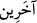

37. Bina kuran ve dalgıçlık yapan şeytanları da (emrine verdik.)
‘Şeytanları da’, ifâdesi, (
) kelimesine mâtuftur. “Bina kuran ve…” ifâdesi ise (
) kelimesinden bedeldir. Yâni bina kuran ve dalgıçlık yapan şeytanları da ona
boyun eğdirdik, demektir.
(
) lâfzı, (
) fiilinin ism-i fâili olan ( ) kelimesinin mübâlağa sîğasıdır.
Bu şeytanlar, “Süleyman’a kalelerden, heykellerden, havuzlar kadar geniş ve derin
leğenlerden, sabit kazanlardan ne dilerse yaparlar” (Sebe’ 34/13); Dimaşk (bugünkü
Şam) ve Yemen’de yüksek binalar inşa ederlerdi. Beyt-i Makdis ve Istahr da bu binalar
arasındadır. Istahr (
), İran şehirlerinden olup “cinlerden bir ifrît dedi ki” (en-
Neml 27/39) âyet-i celilesindeki cinnin kayasından dolayı bu adı almıştır.
(
) lâfzı da suya dalıp oradan birşeyler çıkarmak anlamındaki (
) fiilinin ism-i faili olan (
) kelimesinin mübalâğa sîğasıdır.
el-Müfredât’ta der ki: “Şeytanlar arasında da Süleyman’a dalgıçlık edenler vardı”
(el-Enbiyâ 21/82) âyet-i kerimesi, sadece “inci çıkaranlar” anlamında değil; “hiç
görülmemiş ürünler ve nadîde mahsuller çıkaranlar” anlamındadır.
38. Demir halkalarla bağlı diğer yaratıkları da (onun emrine verdik.)
Bu ifâde, “bina kuran” anlamına gelen (
) lâfzına mâtuf olup o da bedele dâhildir.
İki davarı birbirine bağladığınız zaman (
) ve daha çok bağlamayı ifâde
etmek üzere de (
) denir. Buradaki de çokluk ifâde eden türdendir.
Râğıb der ki: (
) kelimesi, “bağlamak” demektir.
İbnü’ş-Şeyh de şöyle der: (
) ifâdesi, (
)’nin sıfatı olup tef’îl vezninden ism-i
mef’ûldür. Bir şeyi bir başka şeyle birleştirdiğiniz zaman kullandığınız (
) ifâdesinden nakledilmiştir. Ayne’l-fiil olan ( ) harfinin şeddeli olması ise fiilin
mübâlağa ve teksir ifâde etmesi içindir.
(
), zincir anlamındaki (
) kelimesinin çoğuludur. Bağışa da “safed”
denmektedir; çünkü yapılan ihsân, ihsan edileni edene bağlamış olmaktadır. Yalnız
“zincirlemek” anlamındaki “safed” ile ihsân etmek anlamındaki “safed” lafızlarının
fiilleri arasında bir ayrım yapılarak (
) fiili, “bağladı” anlamında; (
) fiili ise
“ihsân etti” mânâsında kullanılmıştır. Bu kullanışta (
) ile (
) fiillerindeki kullanışın
tersi bir durum vardır. Çünkü yukarıdakilerin aksine bunların üç harfli olanında hayır ve